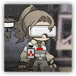
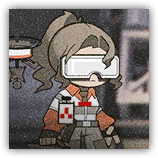

莱茵生命工程科成员 Rhine Engineering Member
远程 法术；普通 任意
|
 |
莱茵生命的工程师。负责提供设备或在生产设备时提出专业意见，在事务上与能量科成员关系密切。 |
莱茵生命工程科成员丨Rhine Engineering Member
中型类人（任意），守序中立
| AC 13 | 先攻 +5（15） |
| HP 45（6d8+18） | |
| 速度 30 尺 | |
| 调整 | 豁免 | 调整 | 豁免 | 调整 | 豁免 | |||||||||
|---|---|---|---|---|---|---|---|---|---|---|---|---|---|---|
| 力量 | 9 | -1 | -1 | 敏捷 | 13 | +1 | +1 | 体质 | 16 | +3 | +3 | |||
| 智力 | 17 | +3 | +3 | 感知 | 12 | +1 | +1 | 魅力 | 11 | +0 | +0 |
| 技能 调查+3，察觉+3 |
| 装备 软质护具 |
| 感官 黑暗视觉60尺，被动察觉13 |
| 语言 通用语，哥伦比亚语 |
| CR 1（XP 200；PB+2） |
动作 Actions
多重攻击 Multiattack。莱茵生命工程科高级成员发动两次能量射线攻击。
能量射线 Energy Ray（充能6）。近战或远程攻击检定：+5，触及5尺或射程120尺。命中：7（1d8+3）光耀伤害。
磁力修复 Magnetic Repair（充能5~6）。莱茵生命工程科高级成员选择30尺内的一个可见目标，使得目标立即受到修复术效应。
莱茵生命高级工程科成员 Rhine Engineering Senior Member
远程 法术；普通 任意
|
 |
莱茵生命的工程师。能量科为莱茵生命争取到了越来越多的哥伦比亚官方资源，工程科成员以此为机会，设计并生产出更多精尖设备。 |
莱茵生命工程科高级成员丨Rhine Engineering Senior Member
中型类人（任意），守序中立
| AC 16 | 先攻 +5（15） |
| HP 67（9d8+27） | |
| 速度 30 尺 | |
| 调整 | 豁免 | 调整 | 豁免 | 调整 | 豁免 | |||||||||
|---|---|---|---|---|---|---|---|---|---|---|---|---|---|---|
| 力量 | 18 | +4 | +4 | 敏捷 | 18 | +4 | +4 | 体质 | 16 | +3 | +5 | |||
| 智力 | 14 | +2 | +4 | 感知 | 14 | +2 | +2 | 魅力 | 12 | +1 | +1 |
| 技能 调查+4，察觉+4 |
| 装备 软质护具 |
| 感官 黑暗视觉60尺，被动察觉14 |
| 语言 通用语，哥伦比亚语 |
| CR 2（XP 450；PB+2） |
动作 Actions
多重攻击 Multiattack。莱茵生命工程科高级成员发动两次能量射线攻击。
能量射线 Energy Ray。近战或远程攻击检定：+5，触及5尺或射程120尺。命中：9（1d10+4）光耀伤害。
磁力修复 Magnetic Repair（充能5~6）。莱茵生命工程科高级成员选择30尺内的一个可见目标，使得目标立即受到修复术效应。